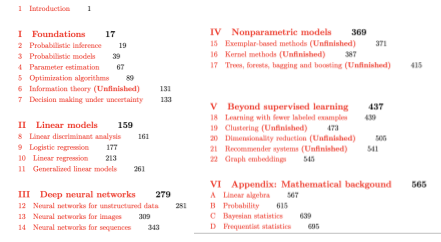

Probabilistic Machine Learning: An Introduction
by Kevin Patrick Murphy>.
MIT Press, 2021.
Key links
If you use this book, please be sure to cite
@book{pml1Book,
author = "Kevin P. Murphy",
title = "Probabilistic Machine Learning: An introduction",
publisher = "MIT Press",
year = 2021,
url = "http://mlbayes.ai"
}
Endorsements
- "My favorite machine learning book just received a face-lift!
'Probabilistic Machine Learning: An Introduction' is the most
comprehensive and accessible book on modern machine learning by a
large margin.
It now also covers the latest developments in deep learning and
causal discovery. With this upgrade it will remain the reference
book for our field that every respected researcher needs to have
on their desk." -- Max Welling,
U. Amsterdam
- "There are many books on machine learning out there, but none gives
such a well-rounded, up-to-date, and comprehensive view of the
field as this one. We use this book as reference reading for our
students taking the advanced machine learning course at Oxford to
introduce them to fundamental as well as current topics in the
field. I'm amazed at the amount of work that went into this
book---which will surely be used by many to train the next
generation of machine learning experts."
-- Yarin Gal, U. Oxford
Table of contents

Acknowledgements
I would like to thank the following people for helping with this book.
- People who helped write some sections:
Krzysztof Choromanski,
Justin Gilmer,
Zico Kolter,
Frederick Kunster,
Lihong Li,
Si Yi Meng,
Aaron Mishkin,
Byran Perozzi,
Colin Raffel,
Mark Schmidt,
Sharan Vaswani,
Andrew Wilson.
- Proof reader: John Fearns.
- People who have provided feedback on parts of the book:
Sebastien Bratieres,
Kai Brodersen,
Peter Cerno,
Daniel Galvez,
Abhishek Kumar,
Max Lepikhin,
Aaron Michelony,
Horst Stühler.
Hal Varian.
- People who have helped with the code:
Andrew Carr,
Aurelien Geron,
Osvaldo Martin,
Duane Rich,
Mahmoud Soliman,
Theodore Vasiloudis,
Oscar Wahltinez.
- People who have helped with the figures:
Sandeep Choudhary, and others who are credited in the figure captions.